Personal page of Daniel Șerbănescu.
Daniel
/daniˈel/
Meaning: God is my judge.
Origin: Hebrew.
Șerbănescu
/ʃerbəˈnesku/
Meaning: Descendant of a Șerban.
Origin: From Slavic “serb” to Latin “servus” or Romanian “șerb”.
Software Developer with an interest in Linux and Open Source.
